Using research as the backbone of our work, our team began imagining concepts, experiences, and software prototypes. At its core, our process centered around creating trading experiences that are positive enough to keep traders coming back to Liquidnet. We did this by redesigning interactions that show traders the 'hidden value' Liquidnet has, and how to use that to their advantage.
Overview
This phase consists of ideating, concept testing, and prototyping. Chronologically, this work overlapped with our last phase of research and leaned heavily on the insights from that phase. Through this process, we went from broad concepts to specific designs, selecting the ideas that have the most value to our clients or users.
Problem
We need to digest our research findings to find design opportunities to help traders and Liquidnet.
Challenge
Our team had to prioritize both our client's needs and trader's needs in our concepts.
Conceptual Journey
Our team began with ideation through design activities meant to brainstorm any ideas related to our project focus. From there, we narrowed our ideas through concept testing, and finally prototyped the most valuable concepts.
Ideating
Concept Testing
Prototyping
Ideating
Our team used the Crazy Eights method to generate concepts, and storyboards to envision a related experience.
Concept Testing
We evaluted our storyboards with our clients and proxy users. Their feedback helped us choose our best concepts.
Prototyping
Knowing what concepts to pursue, our team began to make low and mid-fi prototypes to envision our ideas.
Ideating
With contextual research and 'How Might We' questions to guide us, our team moved into ideation. We used Crazy Eights to draw out any and all ideas, five of which are shown below. We then drew the most compelling ideas in storyboarding.
Flexible Layouts
Traders want a customizable application that reflects their specific trading styles or needs. We proposed using tabs in Liquidnet that allow users to drag and drop menus into place as one solution.
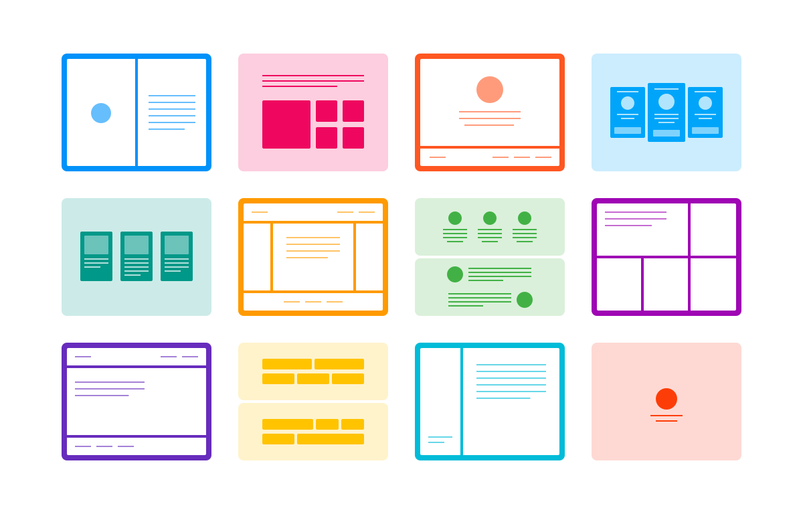
User Profiles
Liquidnet wants advice on measuring user-behavior data. We recommended user profiles. Users can get customized responses to app usage, and Liquidnet can collect a profile's behavioral data.
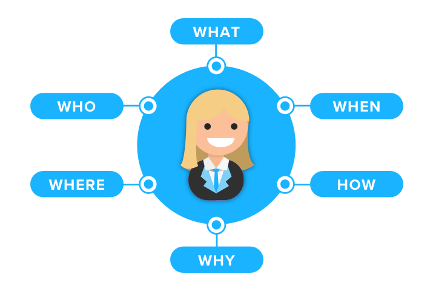
Improved Blotter and Analytics
Small changes to Liquidnet's existing design can increase legibility of the application. We recommend changing sizing, using color and using icons to create visual hierarchy.
Team Metrics for Success
We recommend incorporating team metrics into Liquidnet. Traders and portfolio managers can figure out the team’s progress at a glance in-app. This is faster and more accurate than a self-generated report.
Customized Alert System
We recommend redesigning alerts, as they inform traders as trades come in over the day or as orders become executable. We wanted traders to be able to make their own types of alerts and categorize alerts as well.
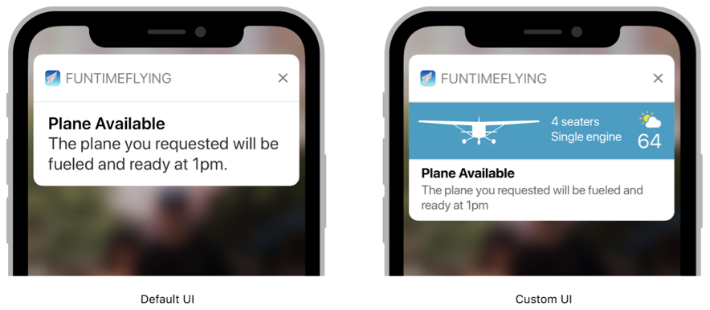
How did we come to these concepts?
GENERATIVE METHODS
We started as broadly as possible by drawing as many ideas based on our research as possible. Ideas were then grouped, and storyboards were based on the most compelling groupings.
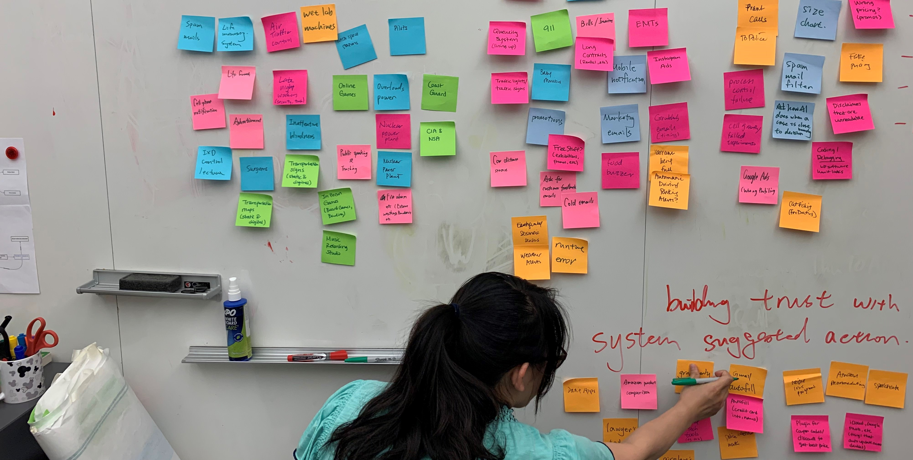
Idea generation
Each team member had 8 minutes to draw 8 ideas
A crazy idea: AI that tells you how to trade verbally
A feasible idea: Making EOD summary reports
Categorizing ideas
During sorting, three groupings came about: closure and reports, group feedback, motivating through animations and sound.
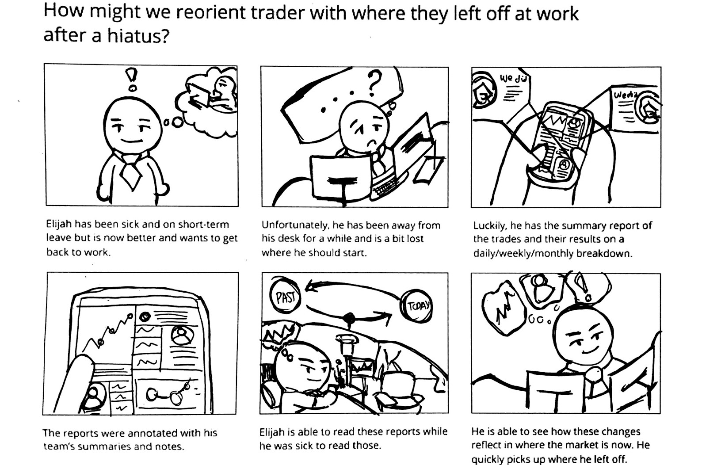
Ideas to stories
Crazy eight ideas inspired our storyboards
Ideas were written into guiding questions
The story that followed 'answered' the question
Drawing it out
The three categories from crazy eights were followed
We each drew out a few stories for each category
The team then convened and compared storyboards
SYNTHESIS
Our storyboards summarized our overall ideas from the Crazy Eights activity, in preparation for speed dating where we would test our initial concepts. In this section, we will go over a few of the storyboards our team made.
Scenario: Reorienting traders after hiatus
Traders need to refresh their knowledge of the market every morning before work. We propose Liquidnet streamline their data for traders to read before work.
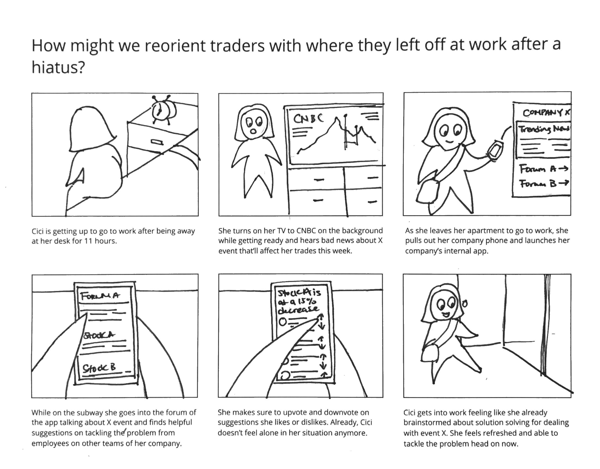
Scenario: Visualizing data better
Data analytics need to be interpreted properly before a trader can make a trading decision. We recommend grouping similar trading trends into default analytics packages.
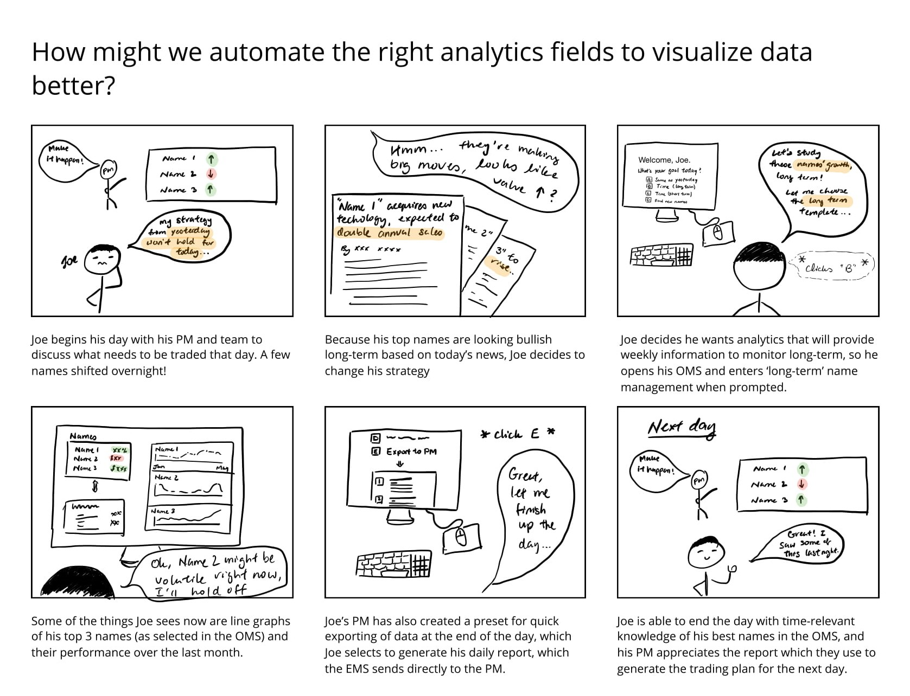
Scenario: Trader participation in product eval
Traders are reluctant to try new features in Liquidnet. By providing small incentives and opportunities for feedback, Liquidnet can learn more about their user and onboard them to new features.
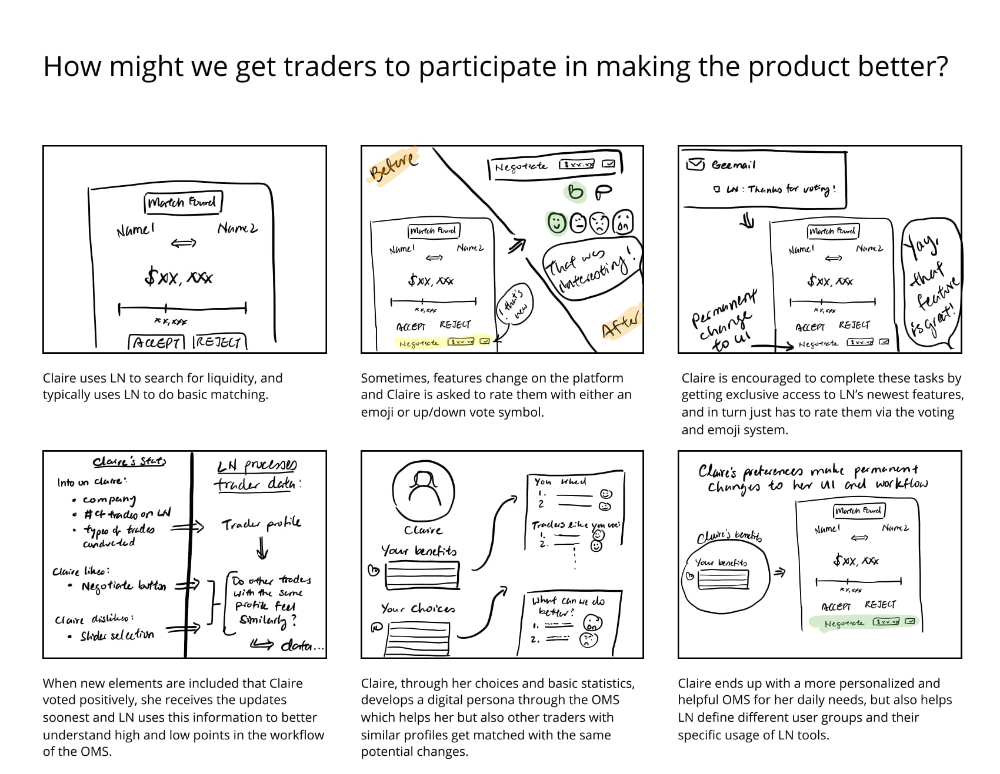
Concept Testing
Storyboarding allowed our team to conceptualize over three opportunity areas. Each of these areas came from the needs gathered from the previous research phase using generative methods.
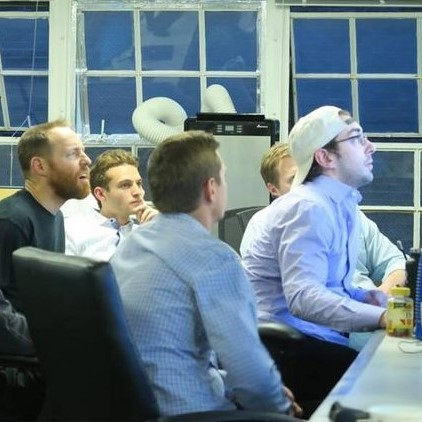
Data Analytics & Visualization
Traders don't want to miss out on new information and are always overwhelmed with data or data analytics tasks.
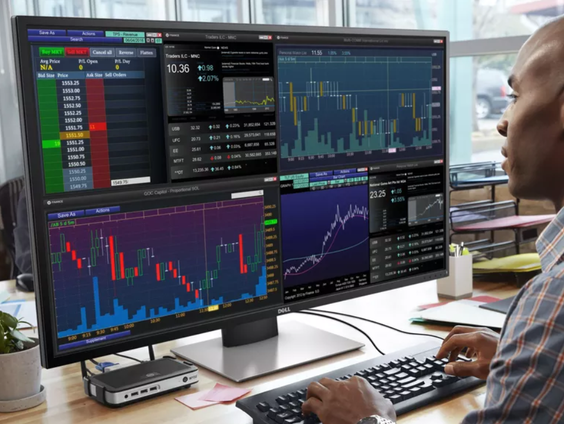
Need for Customization
Traders want customized interfaces because of the uniqueness of their roles and trading style.
Lack of Closure
Traders don't have a rhythm to figure out what makes a good trade, and want to know what could improve their trades.
How did we come to these opportunities?
GENERATIVE METHODS
Now we had an array of ideas and storyboards, so we showed them to our clients to see what had the most value for Liquidnet through speed dating. Below is a brief summary of our speed dating process.
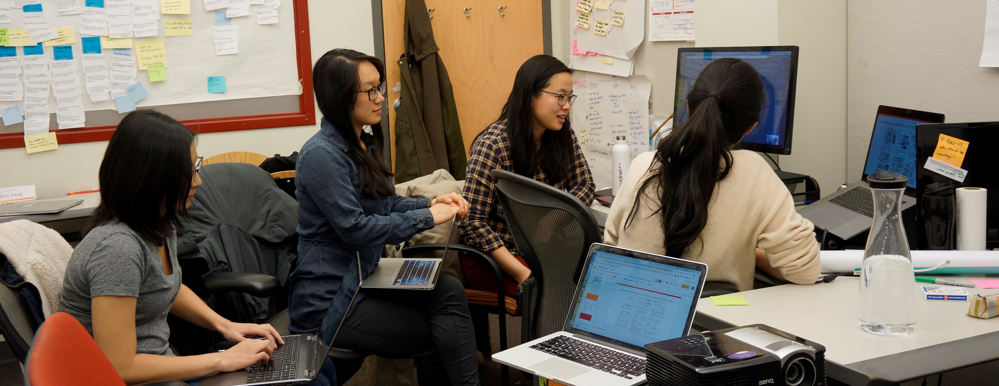
Showing our storyboards
We prefaced our storyboards with leading questions
Each question connects to an opportunity area
We asked about feasibility and usefulness for each
Collecting feedback
Our clients served as our speed dating candidates
We discussed our work in the context of Liquidnet
Feedback helped us envision feasibility of design
SYNTHESIS
Feedback given from our clients during speed dating was dissected to help us decide project direction. The most valuable ideas related to sharing and surfacing information and analytics, whereas optimizing timing was not well received.
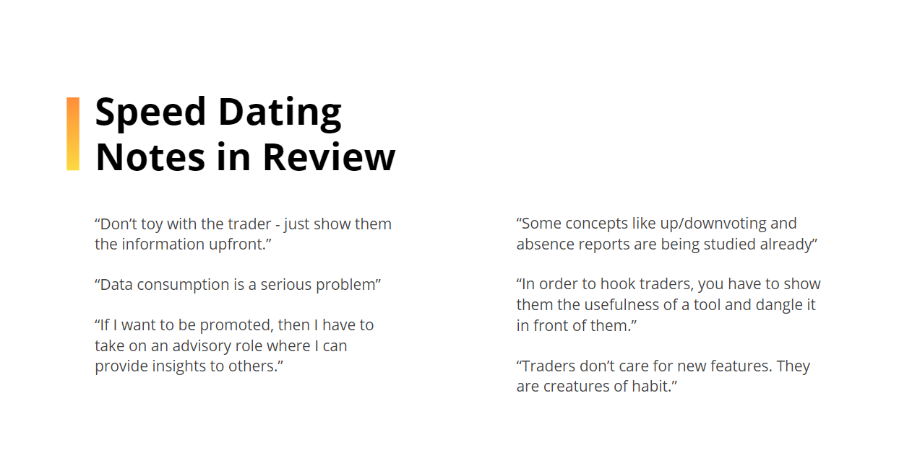
Valuable ideas
Some ideas overlap with new Liquidnet products
Ideas related to 'unique data' for traders well received
Team info sharing could be very useful
Constructive criticism
Concepts on optimizing trader productivity were weak
Social media could be a good model for our designs
Giving the trader too many or too few choices
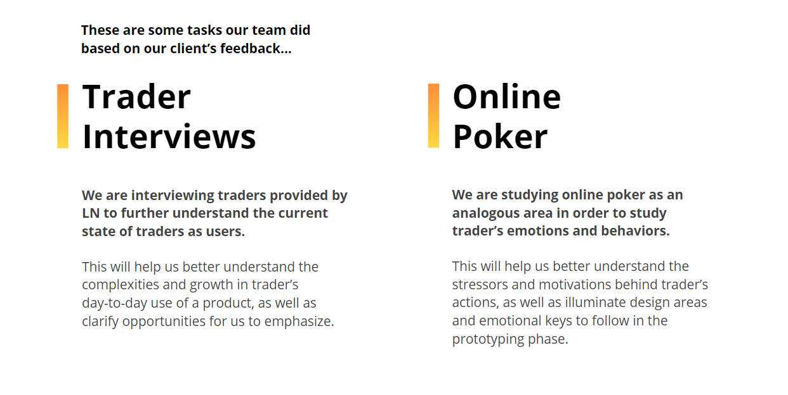
Our new direction
We narrowed our project focus with faculty and clients
Clients asked for analogous domain research to be done
Clients wants best practices for targeting user styles
We want to...
Aim for better usability, an emotionally positive user experience, and more efficient data visualizations.
Aim for better teamwork and more customized content to assist traders in improving their performance.
Prototyping
Moving forward, we had feedback on which concepts might be most valuable and made some low, mid, and high-fi prototypes of those. We were then able to show them during our spring semester presentation.
Alerts
This concept redesigns the customizable alert ecosystem in Liquidnet. It focuses on making suggested actions clear for each alert and also introduces alert grouping.
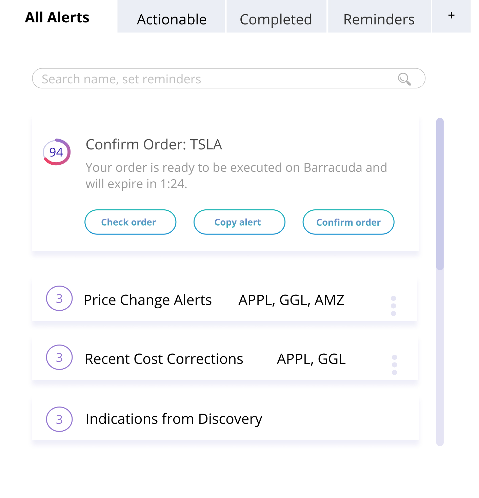
Analytics and Blotter
We made analytics and the blotter more readable by using visual icons and cues on the graph. We also add more opportunities to interact by adding hover-over text.
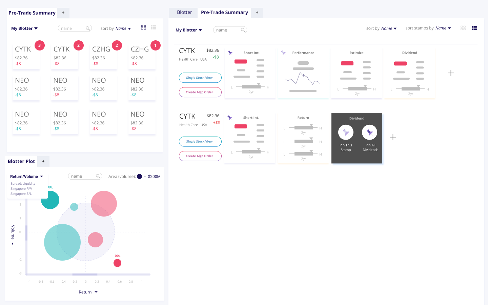
Team Metrics
On the left, we see all team actions with key information (names, volume, price) listed. On the right, we see a potential way to represent individual and team performance.
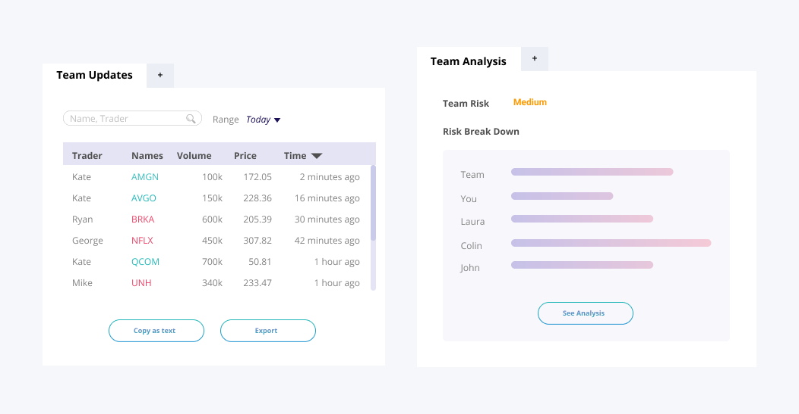
Flexible Layout
To give traders a customizable experience, we designed for a flexible layout with movable tabs. Different traders may rearrange their front-end to suit their trading style.
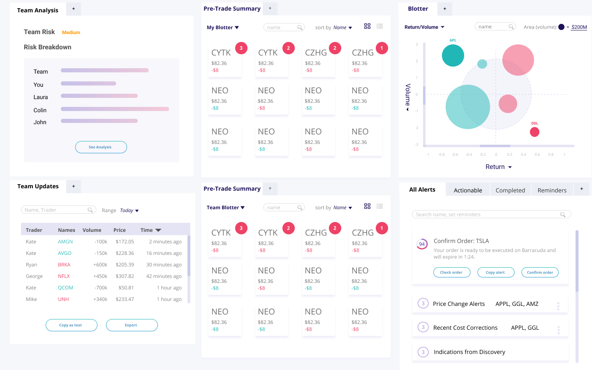
How did we come to these prototypes?
GENERATIVE METHODS
We started with low-fi prototypes and tested with some proxy users. After reflecting on the feedback, we iterated and developed secondary low-fi work and a first round of mid-fi work.
Low Fidelity (1st round)
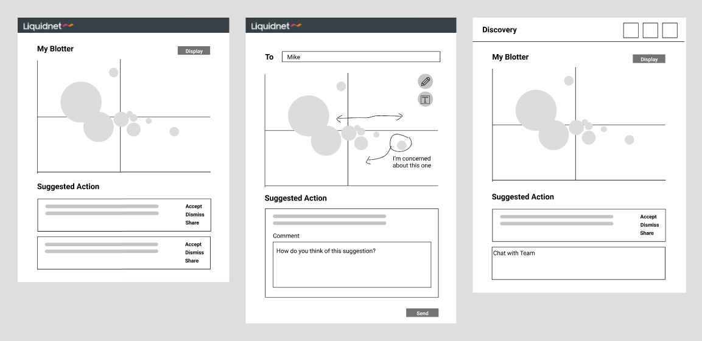
Storyboards to Screens
Well-liked storyboards were turned into low-fis
Each storyboard became its own screen
Low-fi screens were built as separate demos
Proxy Testing
We tested our low-fi designs with proxy users
We asked what specific info traders need in-app
This guided the info added in mid-fi screens
Low Fidelity (2nd round)
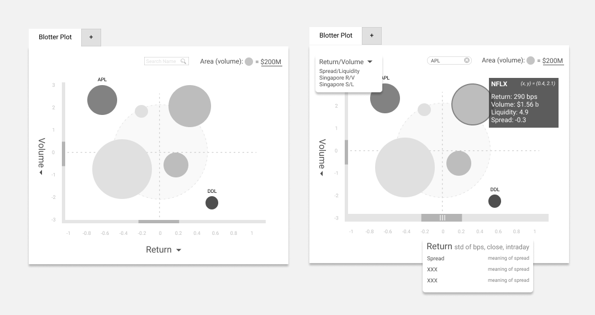
Improved visuals
We made the visuals of our low-fis uniform
Based on feedback, we made our screens modular
Each could function as a tab in one application
Adding context
After fixing visual unity, we decided to add context
We consulted our clients to find reasonable data
We changed our tab layout to fit the existing app
Mid Fidelity
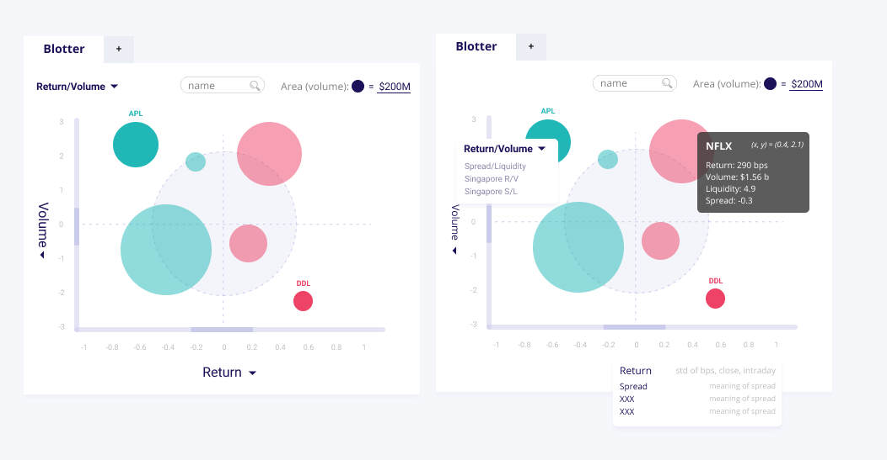
Adding detail
Realistic colors were added
Blues, greens and red are standard in fintech
Real symbols and values were added
Showing interactions
We made multiple screens of each concept
This showed intended interactions with it
Hover-over and clicks were described in presentation
SYNTHESIS
As we closed out our spring semester, we received feedback on our prototypes and decided how to move forward with design in the summer.
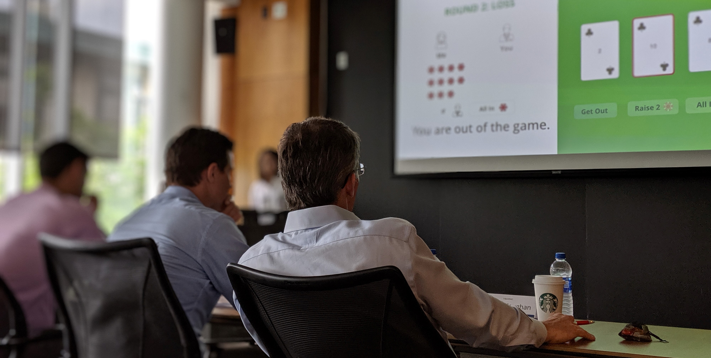
Feedback
Of our designs, analytics and alerts are most useful
Team metrics are too abstract for where Liquidnet is
Our summer time is best spent working on alerts
Our clients want us...
...to focus on how alerts generate action
...to find how analogous domains alert users
...to prepare work for Liquidnet Labs in the summer
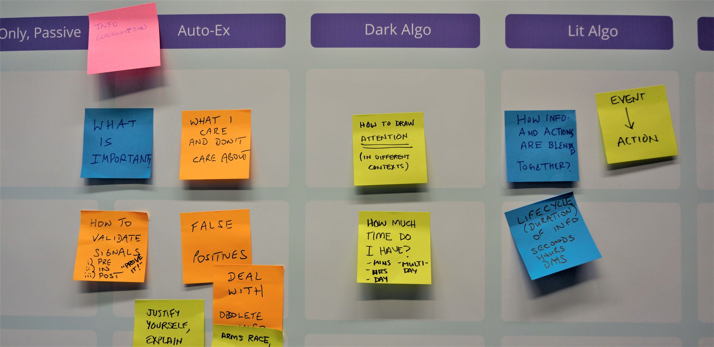
Reviewing feedback
Our team goals align with our client's needs
We decided to focus on alert designs
Analogous domain research will be a summer focus
Summer objectives
Our team will make prototypes for Liquidnet Labs
This will be a chance to user test with traders
They would be high-fi versions of our Spring work
Takeaways
Our team had developed mid-fi prototypes based on the generative research gathered previously. The prototypes included these ideas to address problems with overwhelming data analytics, need for trader customization, and lack of closure. Based on client feedback, the team decided to narrow our focus on the alert ecosystem as discussed in the next phase.
Progress
Our team made prototypes that address the needs of our client as well as traders. This sets us up for the next iterative design phase.
Learnings
Our team discovered which research insights provide the most value to our client and lead to better alert systems for Liquidnet out of our project.